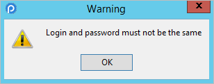
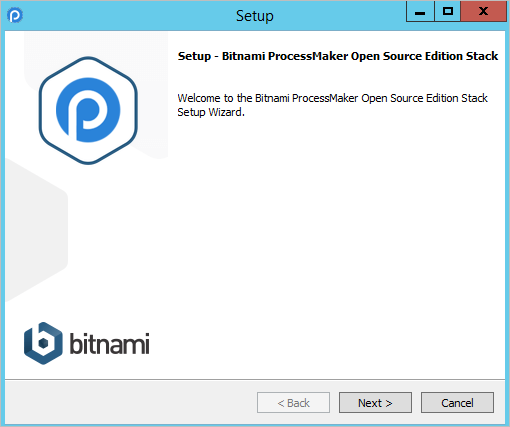
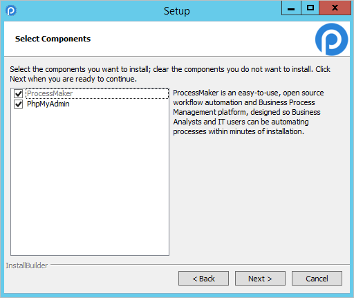
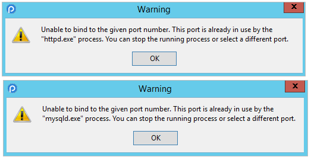
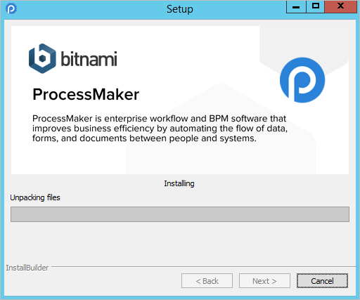
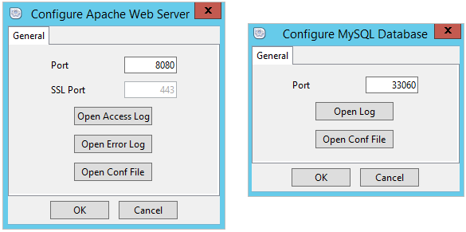
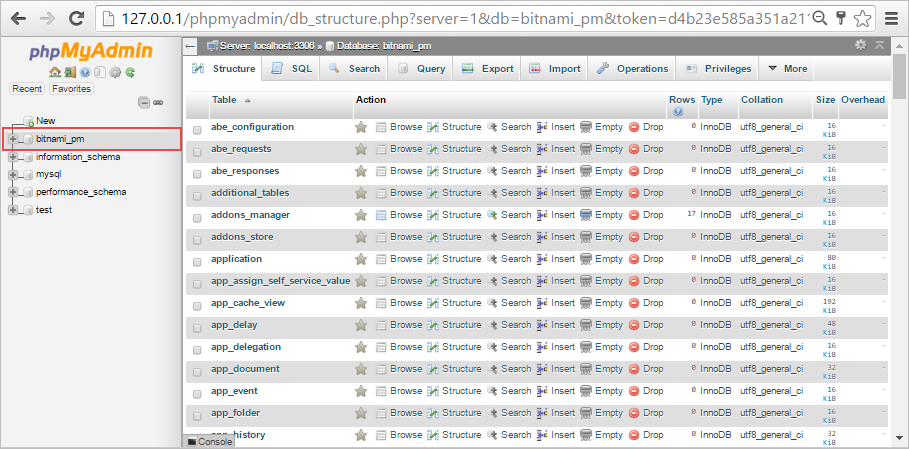

From ProcessMaker version 3.0.1.8 on, ProcessMaker provides an user-friendly Bitnami ProcessMaker Installer that automatically installs and configure:
- ProcessMaker
- Apache
- MySQL
- PHP
- phpMyAdmin
Before beginning the installation, check the Installation Requirements to see whether your server meets the necessary hardware and software requirements and do not forget to read the following recommendations:
Recommendations
| It is strongly recommended this self-installer package (.exe installer) be used to install Processmaker 3 for personal use only, and NOT on Production servers. Instead, do a Manual Installation. |
- Please check out our supported stacks page, and compatible browsers list.
- If using Internet Explorer 8, 9 or 10 enter the URL like: http://localhost:8080/. Do NOT forget to add the http:// protocol so that the browser redirects the page to ProcessMaker.
- If working with Internet Explorer 11, please read the Internet Explorer Compatibility page.
- ProcessMaker 3.0.1.8
- Apache 2.4.20
- MySQL 5.5.49
- PHP 5.5.35
- phpMyAdmin 4.6.1
- Real Name: The admin's name.
- Email Address: (Optional) The email address of the user, which will be used to deliver e-mail notifications concerning cases.
- Login: The account name that should be provided when the user logs into the system. Usernames can contain letters, numbers and underscores. Usernames can also contain uppercase characters, but they are not case sensitive when logging in.
- Password: A string of at least 5 characters, which can include spaces and symbols. Take into consideration that the Login Username and the Password can not be the same. 
- Please Confirm your password: If the second password doesn't match the first password or the passwords don't meet the set requirements, then a red error message will appear.

-
If any of the fields is not filled up (except for the Email Address field), the following message will be displayed.

- Username: The name of the user account from which emails are sent. Some email servers, such as gmail, require that the account name include the full email address, such as: johndoe@gmail.com
- Password: The password for the user account.
- Re-enter: Re-enter the password for the user account.
- SMTP Host: The IP address or domain name for the email server. For example, "smtp.gmail.com", "smtp.mail.yahoo.com" or "smtp.example.com".
- SMPT Port: The port number used by the email server. Generally port 25 is used, or alternatively port 587. If connecting to the email server with a SSL or TLS connection, generally port 465 is used. If left blank, the default port 25 will be used.
- Secure Connection: Select whether the email requires a secure connection:
- None: Not a secure connection to the email server.
- TLS:Select if using Transport Layer Security to connect to the email server.
- SSL:Select if using Secure Sockets Layer to connect to the email server.
- Username: By default, the username is root.
- Password: This is the same password typed in the Create Admin Account dialog during the installation.
Bitnami ProcessMaker Installer
Download the .exe installer at ProcessMaker's SourceForge page. ProcessMaker versions are labeled according to its build number. To download the latest version of ProcessMaker, look for the highest version number. Remember that the Bitnami ProcessMaker Installer is only available from ProcessMaker version 3.0.1.8 on.
The Bitnami installer for ProcessMaker 3.0.1.8 is bitnami-processmaker-3.0.1.8-0-windows-x64-installer.exe

This installer will automatically install:
Once downloaded the .exe installer, double-click on it to begin the installation. The logo of Bitnami will be displayed.

The Welcome Setup Wizard will display, click on Next to continue with the installation wizard.

In the next screen, select the components that will be installed. By default, ProcessMaker is marked but the installation of phpMyAdmin to handle the administration of MySQL is optional.

Next, choose the folder destination where ProcessMaker along with Apache, MySQL, PHP and phpMyAdmin (if marked in the previous step) will be installed. To install them in a different location, click on the Browse button and select a directory.
| Warning: For security reasons, the Bitnami stack should be installed in a folder which is NOT publicly accessible through Apache or another web server. For this reason, it is recommended to install in a location such as /opt in Linux/UNIX or C:\opt in Windows and to NOT install in a location such as /var/www/html in Linux/UNIX or C:\www in Windows, which might be made publicly accessible by another installation of Apache. |

After that, in the next dialog "Create Admin Account", define the credentials for thethe Administrator user, which by default is named "admin".
Important! The “admin” user will be able to access to all the features and functionality in your ProcessMaker installation, such as: system configuration, processes creation and editing, user and group management, case management, and report and dashboard oversight among others. Thus, it is strongly recommended you take care to configure a difficult-to-guess password for this account. Take a look at this list of password dos and don’ts. You may also consider using a strong password generator like this one.

Bitnami ProcessMaker installer detects if another instance of Apache is installed in the server. If so, the following screen will be displayed to specify a different port.

The same happens when a different instance of MySQL is detected, the next screen will be displayed to specify a different port.

An error message will be displayed if port specified is already in use in both cases.

ProcessMaker can be configured to send out notifications by email. In the next step, SMTP settings can be defined. This step can be skip by unmarking the checkbox and can be configured later inside ProcessMaker. Otherwise, please select an option in the "Email Provider" and click "Next".

If your organization does not have its own email server, it is possible to use Gmail as an external email service. Select the "Gmail" option and fill the Gmail address and password of your gmail e-mail account.

Select the "Custom" option to use an email server which supports the Simple Mail Transport Protocol (SMTP). The following fields must be filled:

In the next step, Bitnami Cloud Hosting services will be mentioned, select the checkbox if interested on the service and click on Next to continue with the installation.

The Wizard Setup is now ready to begin the installation, click on "Next" to start it.

The process installation will begin.

Once completed, the following screen will display, check the box to start using ProcessMaker.

First Login
Once ProcessMaker has been successfully installed, the web browser will be redirected to the login page. The Get Started screen will appear:

To avoid seeing the Get Started screen on every subsequent login, mark the option Don't show me again and the screen will automatically be closed.
Then, enter the name and password of the Administrator user which by default is "admin", but a different username could have been configured in Step 4 of the Installation Wizard. Enter the name of the workspace which was configured in Step 4, which by default is named "workflow", Then click on Login to enter processmaker.

The login page can be configured. For more information see Login Settings.
Note: If a previous version of ProcessMaker was accessed by the web browser, it is recommended to clear the browse cache after installing ProcessMaker to clear any stored pages from previous versions of ProcessMaker.
Bitnami ProcessMaker Stack Manager Tool
Once the installation process has finished, the Bitnami ProcessMaker Stack Manager Tool will be available to manage the Apache and MySQL easily. To access ProcessMaker, navigate to the Welcome tab and click on the Go to Application button.

Select the Manage Servers tab to start, stop or restart the selected server. Server events can be review in the Server Events tab.

Both services can be configured if selecting the service and clicking the Configure button inside the Manage Servers tab. Also, log messages can be review in the Application log tag.

phpMyAdmin
If the phpMyAdmin option was checked during the installation process in the Select the components dialog, phpMyAdmin can be accessed from the Bitnami ProcessMaker Stack Manager Tool.

Or by going to the URL http://127.0.0.1/phpmyadmin/. A new tab will open in the default browser displaying the login screen of phpMyAdmin.

Once logged in, the interface of phpMyAdmin will be displayed. The ProcessMaker database created by bitnami is named by default bitnami_pm. Select the bitname_pm database to review all the ProcessMaker tables.
